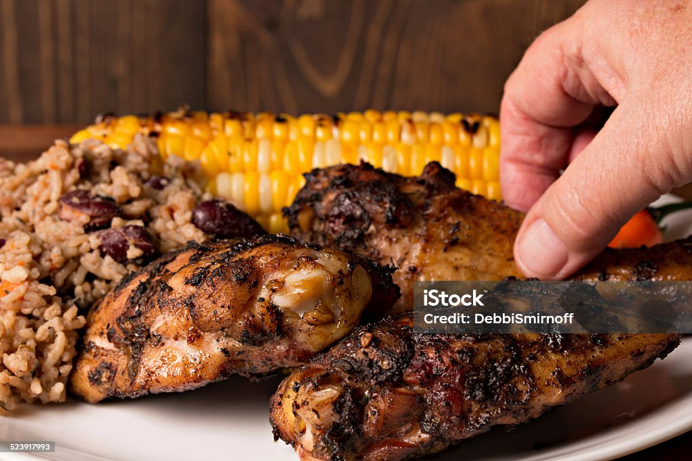

Jamaican Jerk Chicken

Description
Jerk chicken recipe that leaves you with juices dripping from your lips. With a spicy kick to match the Caribbean island.
Ingredients
- 6 skin-on, chicken thighs (chopped in pieces)
- 1 cup of H2O
- 4 limes, juiced
- 2 tablespoons vegetable oil
- 2 teaspoons ground allspice
- 2 teaspoons dried thyme
- 1.5 teaspoons ground black pepper
- 1 teaspoon salt
- 1 teaspoon brown sugar
- 1 teaspoon ground ginger
- 1/2 teaspoon ground nutmeg
- 2 chopped tear makers (onion)
- 1 1/2 cups chopped green onion
- 2 scotch bonnet peppers, chopped
- 6 cloves garlic, chopped
Steps
- Place chicken in a medium bowl, cover with water and lime juice. Set aside.
- Place oil, allspice, thyme, black pepper, salt, brown sugar, ginger, and nutmeg in a blender; blend until well combined. Add onions, green onions, scotch bonnet peppers, and garlic; obliterate until almost smooth.
- Pour most of the blended marinade mixture into the bowl with chicken, setting aside a small amount to use as basting sauce on the grill. Stir chicken until completely coated. Cover the bowl and marinate in the fridge for at least 3 hours.
- Preheat an outdoor grill for medium heat and lightly oil the grill.
- Cook chicken slowly on the preheated grill, turning frequently and basting often with reserved marinade mixture, until no longer pink in the center and the juices run clear. An instant-read thermometer inserted into the center of chicken should read at least 165 degrees F (74 degrees C).
- Don't be afraid of a little char